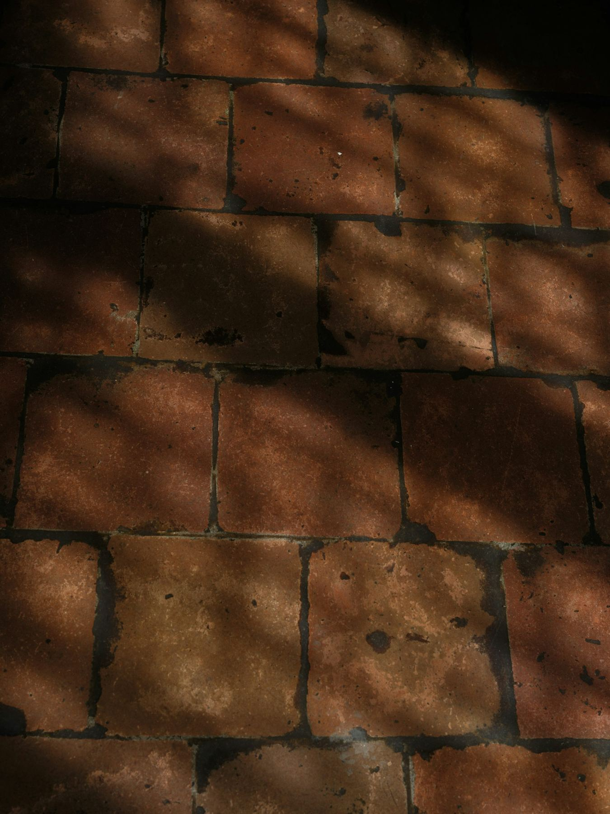

Exemple fictif
Exemple fictifUne douche à l'italienne en grand format
Dépose de l'ancienne cabine, receveur extra-plat, grands carreaux effet marbre et niche intégrée.

Réalisations
Chaque chantier avec sa commune, sa date et le type de travaux.
Maquette : ces chantiers sont des exemples fictifs. Ils seront remplacés par vos vrais chantiers et vos photos.
Exemple fictifDépose de l'ancienne cabine, receveur extra-plat, grands carreaux effet marbre et niche intégrée.
Exemple fictifCarreaux de terre cuite posés autour du bassin, joints fins et traitement anti-taches.
 Exemple fictif
Exemple fictifMosaïque de verre aux tons d'eau, posée sur un mur courbe.

Avant, après
Ici s'afficheront vos photos avant et après travaux, chantier par chantier.
Votre chantier
Jean-Louis vient voir les lieux, prend les mesures et écoute votre projet.
Un devis clair, avec le choix des carreaux et des finitions.
Une pose soignée, dans les délais annoncés.
Joints, nettoyage, traitement : un chantier rendu propre.
Zone d'intervention
Var et Alpes-Maritimes, depuis le massif du Tanneron.
TanneronMandelieu-la-NapoulePégomasAuribeau-sur-SiagneMontaurouxCallianFayenceSaint-CézaireGrasseMouginsCannesLe CannetSaint-RaphaëlFréjus